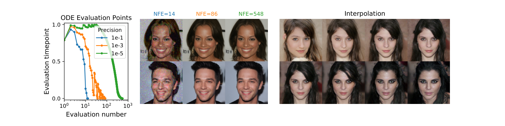
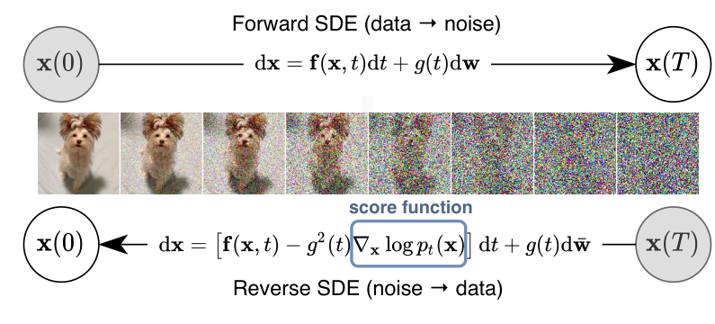
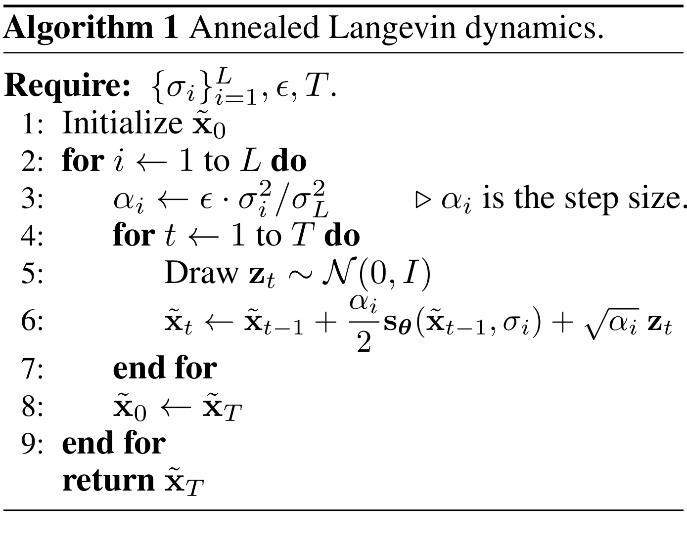
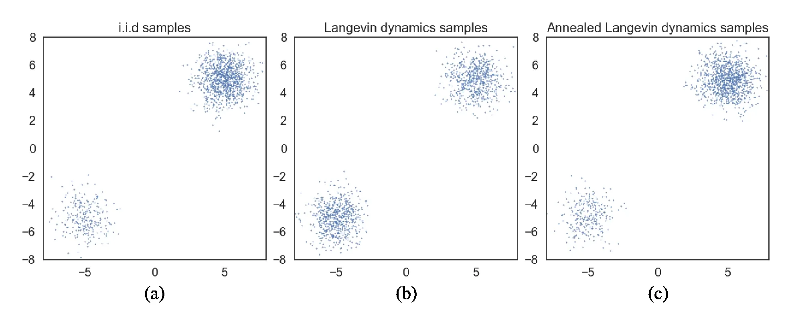
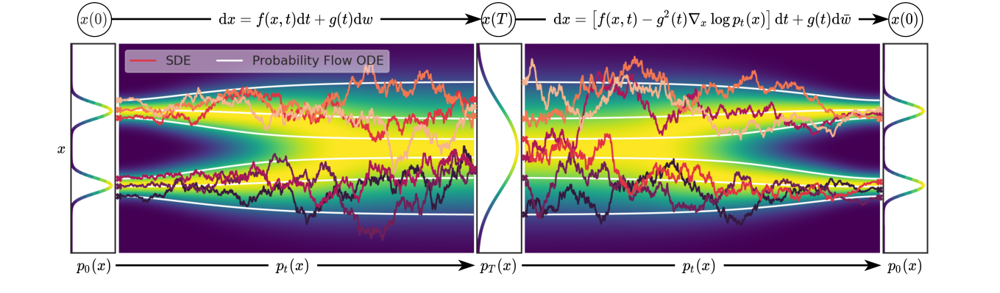
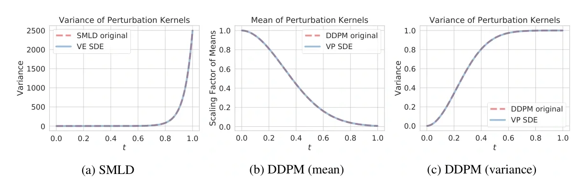

Score、DSM 与连续时间扩散
上一章中，DDPM 已经给出一套可执行的生成方法：人为构造前向加噪链，用已知噪声训练预测器，再从高斯噪声开始逐步反向采样。它的前向边缘分布是
网络接收带噪图像和时间步，预测构造这份输入时加入的噪声。采样时，我们可以把预测噪声换算成干净图像估计，再利用它确定较早时刻的反向转移。于是，一个复杂的生成问题被拆成一系列带有监督标签的去噪问题。
但学会运行这些公式以后，还有几个问题没有解释清楚。它们既涉及原始 DDPM 的采样成本，也涉及我们怎样理解、推广这套方法。
噪声预测器究竟学到了什么
训练时，加入的噪声是我们自己抽取的，所以标签已知。生成时，模型只看到当前带噪状态，并不知道它来自哪张干净图像。同一个带噪点可能由不同的干净样本加噪得到；因此，网络无法总是找回某份唯一的原始噪声。
在均方误差意义下，理想的噪声预测器学到的是给定带噪状态后的噪声条件均值。这引出了一个更基本的问题：这个平均预测为什么能给反向生成提供方向？它和整个带噪数据分布有什么关系？
Score 是回答这个问题的入口。对于时刻 t 的概率密度 pt(x)，Score 定义为
它描述在当前样本位置，往哪个方向移动会使局部对数概率密度增加。这里的梯度对样本 x 求导，而训练网络时的梯度下降对参数 \(\theta\) 求导，两者需要分清。接下来要解释的，是已知的加噪标签怎样让我们学到这个未知分布的向量场。
Song 等人的论文在 §2.2 将 DDPM 的噪声预测目标改写为去噪 Score Matching 目标。也就是说，DDPM 已经隐含地在学习 Score；引入这个概念，是为了看清噪声预测背后的概率含义，并将它与另一条基于 Score 和 Langevin 动力学的生成路线联系起来。
离散时间步之外，概率分布怎样变化
DDPM 按整数时间步 t=1,…,T 定义前向高斯转移。噪声日程给出这些预设时刻之间的变化；原始反向采样也依次从 t 走到 t−1。这样的描述便于训练和实现，但如果我们希望在任意时间观察分布，或者更系统地改变采样时间网格，就需要一个覆盖连续时间的过程定义。
Song 等人在引言和 §3 提出：将有限组带噪分布推广成随连续时间变化的一族分布，用随机微分方程（Stochastic Differential Equation，SDE）描述连接它们的随机过程。DDPM 的高斯链与这种视角并不冲突；适当缩小时间步后，可以从 DDPM 得到一种连续时间扩散。
这一步让“定义生成过程”和“选择数值采样方法”更容易分别讨论。不过，连续时间方程在计算机上仍然要通过有限步数近似求解，写成 SDE 本身不会自动消除采样成本。
反向生成必须每一步都加入随机噪声吗
原始 DDPM 的采样规则包含随机项，并按预设的相邻时刻逐步调用网络。若希望使用不同步长、不同求解器，甚至采用确定性生成路径，需要先弄清反向过程的连续方程，而不是直接删掉原采样公式中的步骤或噪声。
在连续时间框架下，Score 一方面进入反向 SDE，确定从噪声分布回到数据分布的随机演化；另一方面还可以构造对应的概率流常微分方程（Probability Flow Ordinary Differential Equation，probability flow ODE）。在真实 Score 与适当条件下，后者具有确定性轨迹，并与前向 SDE 共享各时刻的边缘概率分布。两种过程可以在同一时刻产生相同的分布，但单个样本经过的轨迹并不相同。
原论文 Figure 3 展示了概率流 ODE 的一个实际结果：数值求解器可以按误差容限自适应选择评估时刻；在论文的实验中，减少 Score 网络评估次数后仍能保持相近的样本质量。右侧还展示了 ODE 潜变量插值。图中的结果说明 ODE 提供了可调节的采样精度与计算量，但不意味着任意模型都能用极少步数保持质量。

这条阅读路径把训练与生成接起来：前向过程提供已知扰动，DSM 学习各时刻的 Score，反向过程再用它从先验恢复数据分布。
flowchart LR
A[数据分布] -->|前向 SDE| B[带噪分布族]
B -->|已知扰动核构造监督| C[DSM 学习时间条件 Score]
C --> D{反向求解}
D -->|含随机增量| E[反向 SDE]
D -->|确定性轨迹| F[概率流 ODE]
E --> G[生成样本]
F --> G这一章统一补充后面推导需要的数学基础：概率密度与条件分布、梯度与散度、ODE 与 SDE、概率守恒，以及条件期望和均方误差。之后再介绍 Score，用 Fokker–Planck 方程连接随机轨迹与概率密度的演化，并通过 Tweedie 公式解释 Score 和干净图像条件均值的关系。
概率密度、条件分布与边缘化
连续随机变量 X 的概率密度记作 p(x)。密度本身不是“恰好抽到某个点”的概率；一个区域 A 的概率由积分给出：
在扩散训练中，干净样本记作 X0，带噪状态记作 Xt。数据分布 pdata(x0) 通常没有已知表达式，但我们有从中抽出的训练样本。人为定义的加噪核 qt(x|x0) 则是“给定这张原图后，带噪状态怎样分布”。联合密度和带噪状态的边缘密度分别是
边缘化就是把没有观察到的原图 x0 积分掉。qt 描述某一张图像周围的噪声云团，pt 则把所有训练图像的云团按数据概率混合起来。例如已知的高斯加噪核可以是
其中 at 控制信号缩放，bt 控制噪声标准差；DDPM 对应 \(a_t=\sqrt{\bar\alpha_t}\)、\(b_t=\sqrt{1-\bar\alpha_t}\)。即使 qt 是简单高斯，混合得到的 pt 也通常不是单个高斯。
只观察到带噪状态 x 时，原图的后验条件密度由贝叶斯公式给出：
它衡量各种可能原图对当前带噪点的解释程度。后面推导 DSM 和 Tweedie 时，需要始终区分已知加噪核 qt、整体带噪密度 pt，以及观察 x 后对原图的后验 p(x0|x)。
梯度、散度与拉普拉斯
对标量函数 \(\phi:\mathbb{R}^d\to\mathbb{R}\)，梯度是由各坐标偏导数组成的向量：
沿单位方向 u 移动很小的距离 h，函数变化近似为 \(h\nabla\phi(x)^{\mathsf T}u\)。因此梯度给出局部上升最快的方向。Score 会取 \(\phi(x)=\log p_t(x)\)，这里先建立求导语言。
对向量场 \(v=(v_1,\ldots,v_d)\)，散度把各方向的流出变化加起来：
正散度表示局部净流出，负散度表示局部净流入。描述概率运动时，我们需要计算的是概率流 pt v 的散度，而不只是速度场 v 的散度。两者通过乘积法则联系：
拉普拉斯算子是梯度的散度，也就是各坐标二阶偏导数的和：
扩散方程中的拉普拉斯项描述密度如何平滑开来。一维情况下它就是二阶导数：密度局部峰顶的曲率通常为负，谷底的曲率通常为正，扩散因而使峰降低、谷被填平。
ODE：给定当前位置，确定怎样移动
常微分方程（Ordinary Differential Equation，ODE）描述一个状态随时间怎样连续变化。设 \(x(t)\in\mathbb{R}^d\) 是时刻 t 的状态，最常用的写法是
函数 v 给出当前位置和当前时间的变化速度，是一个随时间变化的向量场。知道速度以后，状态的变化可写成积分：
例如一维方程 \(dx/dt=-x\) 表示：x 为正时向左移动，为负时向右移动，而且离零越远，移动越快。它的解是 \(x(t)=x_{\mathrm{init}}e^{-t}\)。给定同一个初值，在保证解存在且唯一的条件下，这条轨迹就是确定的。
计算机通常通过有限步近似这条连续轨迹。例如 Euler 更新为
这里的 k 是求解器的步数，tk 是对应的连续时间。ODE 定义的是连续过程，Euler 则是近似计算这个过程的方法，两者需要区分。以后选择不同步长或 Heun 等求解器，是改变数值近似方法。
确定性轨迹也可以生成随机样本。如果初值 \(x_{\mathrm{init}}\) 是从高斯分布抽取的，不同初值会沿不同轨迹演化，最终状态依然具有概率分布。确定性指的是“给定初值后的演化”，不意味着所有样本都会得到同一个结果。
SDE：在确定性变化上加入随机扰动
随机微分方程（Stochastic Differential Equation，SDE）进一步允许状态在运动过程中受到随机扰动。Song 等人采用的前向 Itô SDE 是
这里用大写 X 强调它是随机变量：即使初值相同，不同随机扰动也会产生不同轨迹。f 是漂移系数，描述局部平均变化；g 是扩散系数，控制随机扰动强度；Wt 是标准布朗运动，也称 Wiener 过程。本节采用与论文主文相同的假设：g 只依赖时间，是作用于各个坐标的标量系数。
理解 \(dW_t\) 时，应先看一小段时间的布朗增量。对正的时间间隔 \(\Delta t\)，有
因此这段随机位移可以写成 \(\sqrt{\Delta t}\,z\)，其中 \(z\sim\mathcal{N}(0,I)\)。SDE 的 Euler–Maruyama 离散更新便是
要特别注意随机项的尺度是 \(\sqrt{\Delta t}\)，不是 \(\Delta t\)。前者让布朗增量的方差等于时间间隔；如果把随机项也乘上 \(\Delta t\)，在时间步趋于零时就得不到同一个扩散过程。不同步骤的 zk 独立抽取。
例如 \(dX_t=g\,dW_t\)，其中 g 为常数、初值固定，表示只有随机扰动的运动。它没有指定向某个目标移动的漂移，但样本分布会随时间扩散：均值保持初值，方差增加为 \(g^2tI\)。因此“每个点怎么运动”和“整团概率分布怎么变化”是相互联系、但不同层次的问题。
从单条轨迹到整团概率分布
ODE 和 SDE 都描述状态的运动规则。给定随机初值或随机扰动后，在同一个时间观察大量轨迹，就得到一团样本及其概率分布，记密度为 pt(x)。这里下标 t 表示观察时刻，x 表示在状态空间中的位置。
后续需要回答三个问题：当前分布在位置 x 附近怎样变化？随着时间推进，整个密度 pt 怎样演化？只观察带噪状态时，能够推断出怎样的干净样本？我们将依次引入 Score、Fokker–Planck 方程和 Tweedie 公式来回答。
Score 是密度在空间中的局部梯度；Fokker–Planck 方程描述 SDE 对应的密度在时间上的变化；Tweedie 公式则在高斯扰动的条件下，把带噪分布的 Score 与干净数据的后验条件均值联系起来。它们都需要概率分布这一层语言，但并不是 ODE 或 SDE 定义本身必须附带的概念。
连续性方程：概率只是在空间中移动
先考虑 ODE \(dx/dt=v(x,t)\)。如果一团随机初值沿这个速度场运动，概率质量会从一些区域流向另一些区域。密度 pt 乘以速度 v 得到概率流 \(J(x,t)=p_t(x)v(x,t)\)。
对固定区域 A，流出边界的概率应该等于区域内部概率的减少：
n 是边界向外的单位法向量；第二个等号使用散度定理。因为这个关系对任意区域都成立，在足够光滑的条件下可以得到连续性方程：
若全空间边界的概率流消失，积分后便有 \(d\int p_t(x)dx/dt=0\)，即总概率始终为 1。这个方程说明：概率密度可以变化，但概率质量不会凭空消失。后面引入 SDE 的随机扩散时，密度演化还会多出扩散项；将它与这里的概率流表达联系起来，是推导 probability flow ODE 的关键。
条件期望：只看到带噪状态时，预测什么最合理
对随机变量 Y，期望是按概率加权的平均。给定另一个随机变量 X=x 后，条件期望使用条件分布加权：
在去噪任务中，\(\mathbb{E}[X_0\mid X_t=x]\) 综合了所有可能产生当前带噪状态的干净图像。它不必等于某一张具体原图。类似地，\(\mathbb{E}[\epsilon\mid X_t=x]\) 是所有可能噪声的后验平均。
这为什么会成为神经网络的预测目标？设网络 a(X) 根据输入 X 预测标签 Y，训练目标为均方误差，假设 Y 的二阶矩有限。记 \(m(X)=\mathbb{E}[Y\mid X]\)，将误差拆成
平方展开以后，交叉项在给定 X 的条件期望下为零，因为 \(\mathbb{E}[Y-m(X)\mid X]=0\)。因此
第一项由数据分布决定，与预测函数 a 无关；第二项在 \(a(X)=m(X)\) 时最小。于是均方误差的理想最优解是条件期望：
把 Y 换成原图 X0，就得到理想的干净图像预测器；换成加噪时抽取的噪声，就得到理想的噪声预测器；换成加噪核的条件 Score，就为 DSM 如何学到整体分布的 Score 提供依据。有限数据、有限网络容量和不完全优化会使实际预测偏离这个理想解。
我们还会使用全期望公式。对可积函数 h，先给定 X 求条件期望，再对 X 平均，等于直接对联合分布平均：
后续把训练样本的平均损失改写成“给定当前带噪位置后，各种可能来源的平均损失”时，这个等式会把两种观察方式连接起来。
前面用 pt(x) 表示时刻 t 的概率密度。现在固定一个时间，先把下标省略，问一个局部问题：如果当前状态在 x，向哪个方向稍微移动，会让它进入概率密度更高的区域？
Score 给出密度上升的局部方向
在密度为正且可微的位置，Score 定义为对数概率密度对样本坐标的梯度：
在 d 维空间中，s(x) 也是一个 d 维向量。给每个位置 x 配上这个向量，就得到一个向量场。它不是给图片打一个标量分数，而是描述密度在这个位置的局部变化方向。
为什么这个向量能表示方向？沿向量 u 移动很小的距离 h，对数密度的一阶展开为
若限制 u 为单位向量，内积在 u 与 s 同方向时最大。因此在 s(x) 不为零时，沿 Score 方向做足够小的移动，可以增加局部对数密度。直接令移动量为 h s(x)，则
这里描述的是局部、足够小步长下的变化。一步跨得很远，或者 Score 由网络近似后含有误差，就不能仅凭这个展开保证密度增加。密度高也不等于一张具体样本的概率高：对连续变量，概率要在区域上积分。
为什么对密度取对数
因为 log 是单调递增的，在 p(x)>0 的位置，\(\nabla\log p(x)\) 与 \(\nabla p(x)\) 方向相同。但它们的大小不同：前者除以了密度 p(x)，衡量的是相对于当前密度的局部变化。一阶近似下，
取对数还有一个重要好处。假设我们能写出未归一化密度 \(\tilde p(x)\)，但很难计算归一化常数 Z：
因为 Z 不依赖样本坐标 x，求梯度时它会消失：
Hyvärinen 在 2005 年提出 Score Matching 时，正是利用了这种对未归一化模型有利的性质。它说明我们可以围绕密度的局部变化学习模型，而不必先算出整个高维空间的归一化积分。不过，归一化常数消失并不意味着未知的数据 Score 已经可以直接计算；如何只用样本训练它，仍需要后面的 Score Matching 与 DSM 推导。
高斯分布的 Score 指向哪里
先看一个可以完全算出的例子。设
第一项与 x 无关，第二项求导后得到
因此每个位置的 Score 都朝向高斯中心。离中心越远，向量越长；方差越大，密度越平坦，同样距离下的 Score 越小。一维情况下，若 \(\mu=2,\sigma=1\)，则 x=1 处的 Score 为 1，表示向右移动；x=3 处的 Score 为 −1，表示向左移动；中心 x=2 处的 Score 为零。
这一例子容易让人形成“Score 总指向某个中心”的印象，但真实图像分布通常有很多不同模态。多个高密度区域一起决定局部方向，不能把整个数据分布看成一个高斯。
多个可能来源怎样共同决定方向
用两个或多个高斯的混合来观察这种情况。设
对整体密度求导，有
其中 rk(x) 是观察到位置 x 后，它来自第 k 个成分的后验概率。整体 Score 是各个成分 Score 的后验加权平均，权重会随当前位置改变。若各成分都是同方差高斯，就有
靠近某个成分时，它通常对方向影响更大；处于多个成分之间时，各方向会按后验概率相互叠加，也可能抵消。这正好对应带噪图像的直觉：同一个带噪状态可能由不同干净图像产生，去噪方向需要综合这些可能来源。
例如一维分布由中心分别为 −2 和 2、方差相同、权重相等的两个高斯组成。在 x=0 处，两侧贡献相等而方向相反，所以 Score 为零。但当两个模态足够分离时，0 处恰好可以是低密度谷底。由此可见，Score 为零不保证到达高密度点，沿 Score 移动也不保证找到唯一原图或全局最高密度位置。
扩散中的 Score 随时间变化
扩散模型面对的是一族带噪密度 pt(x)，因此对应的 Score 也随时间变化：
同一个位置 x 在大噪声和小噪声时，可能有不同的局部方向，因为它对应的是不同概率分布。模型一般需要接收 x 和 t，才能知道自己应估计哪个向量场。
这里尤其要区分整体带噪密度的 Score 与某张已知原图的加噪核 Score。对前面写出的高斯加噪核
在 bt>0 时，可以直接算出
若训练样本由 \(x=a_t x_0+b_t\epsilon\) 构造，这个条件 Score 就等于 \(-\epsilon/b_t\)，因而是已知标签。但生成时需要的是 \(\nabla_x\log p_t(x)\)：它要综合所有可能的原图，而不是只围绕训练时这一张 x0 求方向。DSM 如何从已知的条件标签学到未知的整体向量场，将是后面需要证明的训练关系。
有了 Score，还需要生成过程
Score 给出了概率密度的局部空间变化，但它本身没有指定时间如何推进、步长多大、是否加入随机扰动，以及怎样切换噪声尺度。把当前样本反复沿 Score 移动，可能使样本趋向少数模态；这种密度上升操作不等于从目标分布正确采样。
要生成样本，还需要配合具体过程。例如 Langevin 更新在 Score 指引之外加入随机扰动；连续时间反向扩散则由前向过程确定漂移和随机项，并借助 Score 得到反向演化。这也解释了为什么 Score、SDE 与 ODE 在这一篇中相接：我们先理解局部方向是什么，再研究它怎样参与概率分布的演化与采样。

上一章定义了 Score，但定义并没有提供训练标签。我们希望网络估计整体带噪分布的局部方向，却不知道真实密度的表达式。Denoising Score Matching（DSM，去噪得分匹配）把这个困难转成一个监督学习问题：利用已知加噪过程产生标签，训练网络后，得到整体带噪分布的 Score。
Vincent 在 2011 年的 A Connection Between Score Matching and Denoising Autoencoders 中给出了 DSM 目标及其与显式 Score Matching 的等价关系。本章先固定一个噪声尺度推导，再推广到时间条件训练。
我们想匹配的方向没有直接标签
令干净样本为 X0，带噪样本为 Y，固定 \(\sigma>0\)，定义
条件加噪核与整体带噪密度分别是
若能直接取得整体 Score \(s_\sigma(y)=\nabla_y\log p_\sigma(y)\)，就可以用显式匹配目标训练网络：
但我们只有数据样本，没有 pdata 的完整密度，也就通常无法直接计算 psigma 的 Score。这个目标说明我们想学什么，却不能直接充当可执行的训练方法。
从已知加噪核构造标签
给定训练时抽取的原图 x0，加噪核的对数密度是
对 y 求导，得到条件 Score 标签：
原图和噪声在训练时都是已知的，因此这个标签可以直接计算。DSM 使用的就是这份标签：
网络的输入是 Y 和 sigma，输出与 Y 同维的向量；X0 和 epsilon 用于构造训练输入与标签。生成时并不向网络提供真实原图。因为只观察 Y 不能唯一确定 X0，网络也不可能总是精确拟合每份训练标签；需要解释的是这些标签的平均为什么正是我们想要的整体 Score。
条件方向的后验平均等于整体 Score
假设可以交换对 y 的求导与对 x0 的积分，且相关期望有限。在 psigma(y)>0 的位置，从边缘密度的定义开始求导：
两边除以 psigma(y)，再使用贝叶斯公式：
这就是关键等式。每张可能原图给出一个条件方向，整体 Score 按“这张原图产生当前带噪状态的后验概率”加权平均。它不是对所有原图等权平均，也不是只选最近的一张。
第二章已经证明均方误差的理想最优预测是条件期望。把标签 Y 换成本节的条件方向 u，就得到
这里的星号表示理想最优函数。实际模型能否接近它，还取决于数据、容量与优化。DSM 的正确性在于目标的最优方向与整体 Score 一致，并不保证任意网络训练后都没有误差。
两个损失为什么只差一个常数
最优预测的关系也可以进一步写成损失等价关系。记 \(U=u_\sigma(Y,X_0)\)、\(S=s_\sigma(Y)\)，并把误差拆成
平方展开取平均时，交叉项为零，因为
最后一步用到 \(\mathbb{E}[U\mid Y]=S\)。因此
Csigma 由数据和噪声尺度决定，不依赖网络参数 theta。两个目标不是数值上完全相同，但在这些条件下有相同最优解；当求导与期望可交换时，也有相同参数梯度。训练时不需要计算 Csigma 或真实的 S，只需要可计算的条件标签 U。
一个带噪点对应两个可能来源
用一维例子检验“平均方向”。设干净数据以相同概率取 −1 和 1，sigma=1，并观察到带噪位置 y=0。由对称性，两种原图的后验概率都是 1/2。若来源是 −1，条件 Score 为 −1；若来源是 1，条件 Score 为 1。整体 Score 就是
网络只看到 y=0，没有办法知道这一份样本来自哪一侧。若它在此处输出标量 a，该位置的条件 DSM 损失是
最优输出是 a=0，但损失仍有 1/2，表示标签在不同来源之间存在不可消除的差异。输出零并不是网络没有学会方向，而是两种可能方向在这里恰好抵消。真实采样需要结合整个向量场与随机或确定性生成过程，不能把这一个位置的结果解释成“已经生成了干净图像”。
从固定噪声尺度推广到时间条件训练
固定 sigma 的 DSM 只学习一个带噪分布。扩散生成需要一族不同时间的 Score，所以采用时间条件网络 stheta(x,t)。对已知高斯扰动
条件 Score 标签仍可计算：
抽取时间 t 后，使用正的、预先指定的权重 lambda(t) 训练：
在理想函数空间中，只依赖时间的正权重不改变各时刻的最优 Score，但会影响有限网络共享参数时不同噪声等级的训练比重。Song 等人 2021 年论文 §3.3、公式 (7) 使用的正是连续时间 DSM 目标。bt=0 的端点不能直接使用这份标签，实际训练需避开该端点或采用适当处理。
对 DDPM，\(b_t=\sqrt{1-\bar\alpha_t}\)。令网络输出满足
则 Score 误差与噪声误差之间有
所以噪声预测 MSE 可以改写成带相应尺度权重的 DSM。若取 lambda(t)=bt^2，上式中的尺度因子抵消。这个关系解释了 DDPM 为什么已经隐含地学习 Score；同时必须保留时间采样和权重，不能把所有加权训练目标都说成完全相同。
本章建立的是训练关系：用已知扰动构造监督，学到未知带噪分布的整体 Score。如何利用这个向量场生成样本，还需要后面的密度演化与反向过程。
从平均去噪方向到 Tweedie 估计
同一个恒等式还给出干净样本的后验均值。把 $y$ 移到等式另一边，可得：
这就是高斯加性噪声下的 Tweedie 公式：带噪观测加上“噪声方差乘以边缘 score”，得到给定观测后的后验均值。它是一种统计去噪估计，不是逐样本精确还原。若 $y$ 的后验可能对应多种不同图像，均值甚至可能比任何单个候选都更模糊。#Vincent-2011 #Song-et-al.-2021
在第一篇的 DDPM 参数化中，模型预测实际采样得到的 $\epsilon$。对 $y=\sqrt{\bar\alpha_t}x+\sqrt{1-\bar\alpha_t}\epsilon$，最优噪声预测与该时刻边缘 score 只差由噪声尺度决定的换算系数。噪声预测、score 预测和干净样本预测可以在一定参数化下互相换算，但训练权重与数值条件不同，不应因此把它们说成完全相同的训练目标。#Ho-et-al.-2020 #Song-et-al.-2021
DSM 解决了如何从已知扰动标签学习 Score 的问题，但一个固定噪声尺度还不足以解释完整的生成方法。Song 与 Ermon 在 2019 年的 Generative Modeling by Estimating Gradients of the Data Distribution 中提出噪声条件 Score 网络（Noise Conditional Score Network，NCSN），并搭配退火 Langevin 采样，将多尺度 Score 学习用于图像生成。
为什么一个噪声尺度不够
小噪声分布接近原始数据，可以保留图像细节，但各个模态之间仍可能有大片低密度区域。训练样本很少覆盖这些区域，网络估计的 Score 可能不准；Langevin 链也可能长时间停留在一个模态附近，难以按正确比例访问不同模态。
大噪声能让分布更平滑、模态之间更容易连通，但如果生成一直停留在这个尺度，得到的只是噪声很强的样本。我们希望先利用大噪声分布帮助探索，再逐渐降低噪声，恢复更接近数据分布的结构。这里改变的是目标概率分布的平滑尺度，不是让一个样本直接沿最短路径走到某张训练图。
用同一个网络学习多个噪声尺度
选择有限个正噪声尺度，按几何级数递减排列：
每个尺度定义一份带噪密度
NCSN 把带噪状态 y 与噪声尺度 sigmai 一起送入共享网络，目标是
“噪声条件”指的就是这个额外输入。它告诉网络当前要估计哪一份分布的 Score；输出仍是与图像同维的向量。原论文的图像网络结合 U-Net、空洞卷积和噪声条件归一化，但数学上的多尺度方法并不只限于这一种架构。
多尺度 DSM 的训练目标
沿用上一章，单尺度损失是
把不同尺度的损失加权组合：
原论文使用 \(\lambda(\sigma)=\sigma^2\)。代入可将每个尺度的加权损失改写成
这样可缓和条件标签大小随噪声尺度变化造成的损失量级差异。原论文还结合其观测到的 Score 范数尺度关系说明这一选择；它是损失平衡的设计，不是保证所有尺度的实际训练表现相同的定理。正权重不改变各尺度在理想函数空间中的最优 Score，但共享参数的有限网络仍会受到权重影响。
实现时，可以随机抽取尺度 i、干净图像 X0 和高斯噪声 epsilon，构造输入后计算这一份加权损失。训练并不需要先运行 Langevin 采样；采样是网络学好之后的生成阶段。
Langevin 在一个尺度上怎样采样
先固定 sigmai。为了近似从 psigma_i 采样，在当前状态 y 上重复更新：
deltai 是步长，m 是这个尺度上的内层迭代次数。这里的 Score 项提供局部密度方向，随机项允许链探索不同状态；两者一起构成 Langevin 更新。使用真实 Score 时，它对应固定尺度下的连续随机过程
这里 u 是采样链自身的时间，sigmai 在这一段保持不变。满足适当条件时，目标密度是该过程的不变分布。有限步长的离散更新存在误差，有限次迭代也不保证已经充分混合，因此不能把一步沿 Score 移动就称为完成采样。
这也回答了“是否先预测干净图像再重新加噪”的疑问：原始 Langevin 更新直接对当前状态做一次局部移动并加入扰动。即使将 Score 换算成理想去噪器 \(D(y;\sigma_i)=y+\sigma_i^2s(y,\sigma_i)\)，更新也只是
这一式只是同一更新的代数改写：它保留当前状态，对去噪估计做步长控制的移动。它并没有先完全跳到干净图像，再从干净图像的前向加噪核采样下一噪声尺度；同一尺度内的多次更新也不分别对应 DDPM 的 t→t−1。
退火：从大噪声逐层走到小噪声
退火 Langevin 在上面的更新之外加一层循环。先从一个固定先验初始化状态，原论文举例使用均匀噪声；在 sigma1 下运行 M 次 Langevin 更新，再把最后状态传给 sigma2 的采样链。如此继续到 sigmaL。
随着尺度减小，原论文同时缩小步长：
这里 kappa 是基准步长；原论文 Algorithm 1 用 epsilon 表示它，并用 alphai 表示 deltai、T 表示内层次数 M。草稿换用这些记号，是为了避免与 DDPM 的 alphat、噪声 epsilon 和扩散总步数 T 混淆。

低噪声分布在 sigmaL 足够小时近似数据分布，因此采样最终得到接近数据分布的结果。高噪声阶段帮助探索，低噪声阶段逐渐形成细节；这是一种多尺度采样策略，并不保证有限计算下总能跨越所有模态。

贡献与 DDPM 的区别
NCSN 的贡献是把多个噪声尺度组织成一套可训练、可采样的生成方法：高斯扰动缓和原始薄支撑与低密度区域带来的困难；共享噪声条件网络学习一族 Score；退火 Langevin 将这些局部方向用于从大噪声到小噪声的生成。
它与 DDPM 都使用已知加噪过程建立训练目标，但采样规则有所不同：
| 比较项 | NCSN 与退火 Langevin | 原始 DDPM |
|---|---|---|
| 扰动分布 | 多个有限尺度的加性高斯扰动 | 离散高斯链，包含信号缩放 |
| 网络输出 | 尺度条件 Score | 原论文常用时间条件噪声预测，可换算为 Score |
| 一次更新 | 在当前尺度做 Langevin 移动 | 从反向条件分布采样较早时刻 |
| 尺度推进 | 每个尺度多次更新后，再降低尺度 | 按相邻时刻逐步反向运行 |
从逐渐降低噪声尺度的广义意义看，两者都有退火式特征，但 DDPM 不等于退火 Langevin。NCSN 2019 年的方法使用有限尺度；Song 等人 2021 年进一步将它和 DDPM 解释为不同前向 SDE 的离散形式，从而进入连续时间框架。
到这里，我们已经有两种完整方法：NCSN 在有限个噪声尺度上学习 Score，再运行退火 Langevin；DDPM 定义离散高斯加噪链，再学习逐步反向转移。两者的训练都能写成 DSM，但此前的采样规则看起来各不相同。
Song 等人在 2021 年的 Score-Based Generative Modeling through Stochastic Differential Equations 中提出一个共同框架：用连续时间 SDE 定义前向概率路径，用时间条件网络估计路径上的 Score，再利用反向 SDE 或概率流 ODE 生成样本。本章依次讨论前向 SDE、反向 SDE、密度演化与概率流 ODE，说明连续时间框架怎样连接训练和生成。

前向 SDE
从有限个时刻到连续概率路径
令时间 \(t\in[0,T]\)，前向从 t=0 的数据走向 t=T 的噪声。统一写成
我们设计 f 与 g，使终点分布接近容易采样的先验。系数是前向过程的设计选择，原论文这里的前向 SDE 没有可训练参数。对每个时刻，随机状态 Xt 有相应密度 pt；这些密度构成从数据到噪声的连续概率路径。
“连续”描述的是过程定义，计算机上仍然需要离散求解。它的意义是先定义完整动力学，再选择数值求解器及时间网格；这给比较、改进不同采样方法提供了共同语言。连续时间也不要求先知道 Score：前向过程由 f 和 g 定义，Score 会在构造反向过程时出现。
DDPM 怎样得到 VP SDE
先从 DDPM 一步加噪式出发：
为了取连续时间极限，不能保留每步固定大小的 betai 后只增加步数；需要让每一步的扰动随时间间隔一起缩小。设 \(t_i=i\Delta t\)，令
这里离散 betai 是单步噪声方差，连续 beta(t) 是单位时间的噪声率。利用 \(\sqrt{1-u}=1-u/2+O(u^2)\)，一步增量可写成
其中 \(\Delta W_i=\sqrt{\Delta t}\,z_i\) 是布朗增量。和第二章的 Euler–Maruyama 更新比较，令时间步趋于零，就得到
这就是 Variance Preserving SDE（VP SDE，方差保持型随机微分方程）。漂移缩小原始信号，随机项补入噪声，两者共同控制方差。
它的加噪边缘也能与 DDPM 对上。记 \(B(t)=\int_0^t\beta(s)ds\)，离散累积信号系数满足
因此连续时间条件分布为
当 B(T) 足够大，原始信号被压低，条件噪声方差接近 1，终点分布便接近标准高斯。这是有限终点的近似，不应说任意有限 T 都精确得到标准高斯。
“方差保持”也不是说任意数据的方差永远不变。若初始协方差为 Sigma0，则
只有当 Sigma0=I 时，协方差始终保持 I；一般情况下它向 I 过渡。这个名称体现信号衰减与噪声注入的平衡，而不是条件噪声方差不增长。
原论文如何比较离散链与连续过程
前面的推导说明两组离散加噪规则各自有连续时间极限。原论文 Figure 5 把两者放在同一张图里：(a) 比较 SMLD 的扰动方差与 VE SDE；(b) 比较 DDPM 与 VP SDE 的信号缩放系数；(c) 比较它们的扰动方差。图中的曲线几乎重合，直观看出连续过程保留了对应离散过程的边缘统计量。#Song-et-al.-2021

NCSN 的扰动分布怎样对应 VE SDE
NCSN 学习加性高斯扰动 \(X=X_0+\sigma\epsilon\) 的 Score。为了构造与这些边缘分布对应的前向过程，可以沿正向时间逐步增加噪声。设累计噪声方差 v(t) 平滑递增，且 v(0)=0，定义
独立高斯增量的方差相加，所以给定原图时，xi 的条件方差是 v(ti)。在很小的时间间隔下，
因此对应 SDE 与条件边缘为
令 v(t)=sigma(t)^2，就得到原论文的写法 \(dX_t=\sqrt{d\sigma(t)^2/dt}\,dW_t\)。它没有收缩信号的漂移，累计噪声方差持续增加，因此称为 Variance Exploding SDE（VE SDE，方差增长型随机微分方程）。在固定有限时间内方差可以有限，“exploding”不意味着任意时刻都为无穷大。
这里构造的是与 NCSN 扰动边缘相匹配的前向随机过程，不能把它误认为 NCSN 的退火 Langevin 采样链。前向时间从小噪声走向大噪声，退火采样则按相反顺序降低尺度。若采用非零 sigmamin 的实际日程，还需处理零时刻的端点；原论文 Appendix C 在正时间截断区间求解。本节采用 v(0)=0 的平滑设定说明基本关系。
统一框架带来了什么
| 前向过程 | 漂移 f(x,t) | 扩散系数 g(t) | 与已有方法的联系 |
|---|---|---|---|
| VP SDE | \(-\beta(t)x/2\) | \(\sqrt{\beta(t)}\) | DDPM 高斯链的连续时间极限 |
| VE SDE | 0 | \(\sqrt{v'(t)}\) | 对应 NCSN 的加性高斯扰动边缘 |
这里统一的是前向概率路径及其 Score 训练表达，不表示所有离散采样算法都变成了同一个算法。原始 NCSN 的退火 Langevin 与 DDPM 的祖先采样仍有各自的更新规则。
这也使 2021 年论文的贡献更容易区分：作者用 SDE 框架联系已有方法，并在这个框架中提出 Predictor–Corrector 采样、推导对应的概率流 ODE，探索 sub-VP SDE，以及似然计算与条件生成能力。反向扩散的理论结果来自 Anderson，DSM 的训练关系来自 Vincent；Song 等人的工作利用这些基础建立生成框架并发展方法。
前向 SDE 已经定义了从数据到噪声的随机路径。下一步直接研究它的反向过程：Score 怎样修正漂移，让我们从噪声分布返回数据分布？随后再借助 Fokker–Planck 方程，构造另一条具有相同边缘分布的确定性概率流 ODE。
反向 SDE：Score 修正漂移，但过程仍有随机性
前向加噪把数据从 $p_0$ 推向先验 $p_T$。生成时，我们从 $x_T\sim p_T$ 出发，沿时间反向求解。反向公式不是把前向方程简单地把时间符号改掉：它需要每个时刻的边缘 score $\nabla_x\log p_t(x)$ 来修正漂移。这个反向时间扩散结果由 Anderson（1982）建立，Song 等人将它用于 score-based 生成模型。#Anderson-1982 #Song-et-al.-2021
假设前向系数和各时刻密度足够光滑，使反向扩散方程成立。用训练好的 $s_\theta(x,t)\approx\nabla_x\log p_t(x)$ 替换真实 score，反向 SDE 写作：
$\bar W_t$ 是按反向时间定义的 Wiener 过程。公式沿 $t:T\rightarrow0$ 积分；数值实现每步的时间差为负，但布朗增量的方差仍按步长绝对值计算。score 项修正漂移，使样本沿正确的边缘分布路径回到数据端；随机增量仍留在方程中。因此，反向 SDE 是一条随机采样路径，不是点沿 score 向量场做确定性爬坡。实际采样以数值 SDE 求解器近似这条连续过程。#Anderson-1982 #Song-et-al.-2021
有了前向路径和学到的 Score，我们已经能写出随机反向采样过程。接下来进一步问：能否用确定性运动产生相同的时间边缘分布？为回答这个问题，我们先用 Fokker–Planck 方程描述整团概率密度的演化。
Fokker–Planck：随机轨迹怎样改变分布
前向 SDE 已经告诉我们，一个样本如何从数据走向噪声。但生成模型最终要恢复的是整团样本的分布：如果初始样本服从 pdata，经过一段运动以后，概率密度变成了什么？如果改变运动规则，怎样判断它是否仍然产生相同的分布？
Fokker–Planck 方程，也称 Kolmogorov 前向方程，回答的正是这个问题。它将 SDE 中的漂移与随机扰动，转换为概率密度随时间变化的方程。这里的“前向”指沿过程时间描述密度的演化；它并不是专门用于图像加噪的名称。
引入它有明确的目的：先弄清前向扩散怎样搬运、摊开概率质量，再研究如何让分布沿相反方向变化，以及怎样构造具有相同边缘分布的概率流 ODE。下面采用 Song 等人论文主文的设定：g(t) 是仅依赖时间的标量扩散系数，作用于所有坐标。密度与相关函数需要足够光滑，积分边界项需要消失；原论文 Appendix D.1 的 Eqs. (35)–(37) 给出了更一般的矩阵扩散形式。#Song-et-al.-2021
从一次随机移动到密度方程
从已经介绍的前向过程出发：
在很短的时间间隔 h>0 内，给定当前位置 Xt=x，局部增量近似为
它的平均增量是 f(x,t)h，随机部分的协方差是 g(t)^2hI。接下来选一个光滑函数 phi(x)，把它看成对样本位置的观察量。例如，选择 phi(x)=xj 可以观察第 j 个坐标的均值；选择其他函数，可以观察不同区域附近的概率变化。
对 phi 做二阶 Taylor 展开：
给定 Xt=x 后取期望。随机增量的均值为零，但它的平方具有 h 量级的期望，因此二阶项不能舍去：
这里 \(\nabla^2\phi\) 是 Hessian 矩阵，记录二阶偏导；\(\Delta\phi=\sum_j\partial_{x_j}^2\phi\) 是它的迹，即拉普拉斯算子。系数 1/2 来自二阶 Taylor 展开。漂移平方产生的是 h2 量级项，除以 h 后趋于零；布朗增量平方是 h 量级项，因而保留下来。
再对当前位置的密度 pt(x) 平均，并令 h 趋于零：
另一方面，\(\mathbb E[\phi(X_t)]=\int\phi(x)p_t(x)\,dx\)。将右侧第一项分部积分一次，第二项分部积分两次，在边界项消失的条件下得到
因为这个关系对所有适当的观察函数 \(\phi\) 都成立，所以密度满足
这就是本篇使用的 Fokker–Planck 方程。左侧描述固定位置 \(x\) 的密度怎样随时间变化；右侧第一项来自漂移搬运，第二项来自随机扩散。方程里的 \(p_t\) 是所有原始样本和随机轨迹混合后的边缘密度，不能将它误认为给定某张原图的加噪核 \(q_{0t}(x|x_0)\)。
随机扰动为什么使密度摊开
如果 f=0、g 为常数，方程简化为
这就是热方程。一维情况下，它写成 \(\partial_t p_t=(g^2/2)\partial_x^2p_t\)：在一个光滑密度峰顶，曲率通常为负，峰顶密度随时间下降；在谷底，曲率通常为正，密度随时间上升。随机运动因而会把尖锐的密度结构逐渐摊开。
这也让“墨水从密集处扩散到稀疏处”的比喻更准确：它描述的是大量粒子形成的净概率流。单个粒子的布朗运动仍然随机，向密集处或稀疏处移动都有可能。
概率流里怎样出现 Score
将 Fokker–Planck 方程写成前面介绍的概率守恒形式：
\(J_t\) 是概率流密度：第一项由漂移搬运概率，第二项是扩散贡献。扩散项的方向与密度梯度相反，因而净概率流从密度高的区域流向密度低的区域。这里得到的是向量场及其对应的概率流，不需要赋予它物理力的含义。
在 \(p_t(x)>0\) 的位置，利用 Score 的定义，
就能把同一个概率流写成
Score 在这里出现，是因为它将密度梯度改写为“密度乘以一个局部方向”。前向 SDE 本身仍只需要给定 f 与 g；只有当我们把它产生的概率流写成每个位置的有效速度时，才需要这一族密度的 Score。
这个式子接下来会用于构造概率流 ODE：选择合适的确定性速度，就能使它的连续性方程与上面的密度演化方程一致。同样的密度演化并不意味着单个样本走过相同的轨迹。
还需要区分两件事：Fokker–Planck 方程告诉我们怎样检查一个过程的密度变化，但仅凭密度方程不能唯一确定所有随机轨迹的联合规律。推导原扩散过程的反向 SDE 时，还需使用时间反演的条件转移关系或 Anderson 的反向扩散结果；不能把反向 SDE 与概率流 ODE 的漂移系数混为一谈。
概率流 ODE
反向 SDE 已经能从噪声生成图像，为什么还需要 probability flow ODE（PFODE，概率流常微分方程）？因为生成样本只是一个用途：我们还希望使用成熟的 ODE 求解器、把一张图像确定性地编码到潜变量并再解码回来，以及计算模型给这张图像分配的概率密度。PFODE 为同一条分布演化提供了确定性的实现，使这些操作成为可能。它不是完成反向生成的必要步骤，也不需要另训练一个速度网络；其速度可以由已有的 Score 网络与前向过程的 f、g 构造。#Song-et-al.-2021
上一章把前向 SDE 的密度演化写成概率流 $J_t=p_t(f-\tfrac12g^2s_t)$。而 ODE 的连续性方程为 $\partial_t p_t=-\nabla\cdot(p_t v_t)$。因此，选择速度 $v_t=f-\tfrac12g^2s_t$，就能让 ODE 满足同一个密度演化方程；在相同初始分布和适当的唯一性等条件下，两者具有相同的时间边缘分布。用网络估计真实 Score，得到 probability flow ODE（概率流常微分方程）：#Song-et-al.-2021
这个 ODE 没有逐步抽取的布朗噪声；一旦从先验抽到 $X_T$，后续轨迹就由右边的速度场唯一决定。它的关键性质是：在 score 准确等条件成立时，ODE 与前向 SDE 在每个时刻产生相同的边缘分布 $p_t$。这并不表示相同初值会沿相同轨迹运动，SDE 的随机轨迹和 ODE 的确定轨迹通常不同。反向生成时，直接从 $T$ 到 $0$ 数值积分这条 ODE。#Song-et-al.-2021
| 比较项 | SDE 路径 | 对应的 probability flow ODE |
|---|---|---|
| 前向过程 | $dX_t=f(X_t,t)dt+g(t)dW_t$，$0\rightarrow T$：数据分布逐渐扩散到先验。 | $\frac{dX_t}{dt}=f(X_t,t)-\frac12g(t)^2s_\theta(X_t,t)$，$0\rightarrow T$：确定性地搬运分布。 |
| 对应的反向过程 | $dX_t=[f(X_t,t)-g(t)^2s_\theta(X_t,t)]dt+g(t)d\bar W_t$，$T\rightarrow0$。 | 同一 probability flow ODE，从 $t=T$ 向 $t=0$ 积分。 |
| 反向生成时的随机性 | 从先验开始后，每一步仍有布朗随机增量。 | 初值 $X_T\sim p_T$ 是随机抽取的；给定初值后，整条轨迹确定。 |
| 两者关系 | 在使用精确 score 等条件下，两者在每个时刻产生相同的边缘分布 $p_t$；单条 SDE 与 ODE 轨迹通常不同。 | |
表 4：同一前向 SDE 对应的随机反向 SDE 与确定性 probability flow ODE。表中 $s_\theta$ 估计前向过程的边缘 score；反向方程均按从 $T$ 向 $0$ 的时间记法书写。#Song-et-al.-2021
这张表中的“相同”指分布：两种反向求解器在精确 score 下都能把先验变成数据分布，并且沿途匹配相同的边缘密度；它们没有相同的样本轨迹。VP 和 VE 都可以各自代入对应的 $f,g$，得到一套反向 SDE 和一套 probability flow ODE。#Song-et-al.-2021
PFODE 构造了一条不再注入随机噪声的确定性分布搬运路径；在适当条件下，它建立图像与噪声潜变量之间可逆的一对一映射。这里的适当条件包括方程解唯一、正反向积分均可进行；噪声潜变量指沿 PFODE 到达的噪声端状态，不是对原图任意添加随机噪声得到的带噪图。实际编码与重建仍受模型和数值误差影响。#Song-et-al.-2021
它能多做什么
第一，使用 ODE 求解器生成样本。给定初始噪声后，每次更新只需要计算速度，不再抽取布朗增量。因此可以使用 Euler、Heun 或自适应步长的 ODE 求解器：求解器根据数值误差调整步长，探索网络调用次数与生成质量之间的折中。没有布朗随机项不意味着可以任意大步前进，也不保证 ODE 比 SDE 更快或质量更高。#Song-et-al.-2021
第二，建立确定性的编码与解码。从图像端沿 ODE 积分到噪声端，可以得到一个潜变量；再从这个潜变量反向积分，可在理想的精确求解和解唯一等条件下返回原图。随机 SDE 的单个终点并不能唯一指定此前的布朗轨迹，而 ODE 的轨迹由状态和速度场确定。这使潜变量插值与重建有了明确的双向映射；实际重建仍受积分误差等影响。#Song-et-al.-2021
第三，计算模型似然。生成过程能画出一张图，并不自动告诉我们模型认为某张图有多大概率。ODE 还允许跟踪运动过程中概率密度的变化：速度场的散度描述局部体积膨胀或收缩，密度随之减小或增大。令 $v_\theta=f-\tfrac12g^2s_\theta$，沿 ODE 轨迹有
把输入图像积分到具有已知密度的先验端，同时累积散度，就能计算这个 ODE 模型的对数似然。这里 $p_t^{\mathrm{ODE}}$ 指 ODE 模型自己的密度；只有真实 Score 等条件成立时，它才与原 SDE 的 $p_t$ 一致。论文称为“精确似然”的是连续变量变换给出的似然关系，而非 ELBO 下界；实际实现仍有数值积分误差，高维散度通常使用随机迹估计，结果也不代表模型已学到精确的真实数据密度。#Song-et-al.-2021
所以，反向 SDE 回答“怎样随机地生成样本”，PFODE 则进一步提供确定性的分布输运、双向编码和密度计算。两者共享 Score，却具有不同的轨迹与计算用途。#Song-et-al.-2021
“向量场”是一个数学对象类别，不代表不同方法学习的是同一个量。Score 是 $\nabla_x\log p_t(x)$，描述密度的局部变化；probability flow ODE 的速度是 $f-\tfrac12g^2s$，由前向漂移、扩散系数和 score 共同决定；Flow Matching 则为一条选定的概率路径指定目标速度场，并用回归损失训练模型去拟合它。#Song-et-al.-2021 #Lipman-et-al.-2023
Lipman 等人的 Flow Matching 通过条件概率路径构造易采样的训练目标。对某个条件路径而言，训练时可知道条件速度；把条件变量边缘化后，理想的边缘速度是多个条件速度按后验权重汇总的结果。这一点和 DSM 中“条件去噪方向汇成边缘 score”在结构上相似，但目标向量不同：一个是概率密度的对数梯度，一个是推动概率路径演化的速度。#Lipman-et-al.-2023
$\epsilon$-prediction、$x_0$-prediction 和 $v$-prediction 则是扩散模型对网络输出量的不同参数化。以常见 VP 记法 $x_t=\alpha_t x_0+\sigma_t\epsilon$ 且 $\alpha_t^2+\sigma_t^2=1$ 为例，一种常见的 $v$ 定义是 $v_t=\alpha_t\epsilon-\sigma_t x_0$；固定 $t$ 后，这些变量之间可通过线性变换互相换算。它们是网络输出的选择，不等同于 score 或 Flow Matching 的概率路径速度场。具体符号和训练权重依论文约定而变，不能跨文章直接套公式。#Ho-et-al.-2020 #Song-et-al.-2021 #Salimans-and-Ho-2022 #Lipman-et-al.-2023
系列里已有一篇 Flow Matching 笔记，适合进一步阅读：An introduction to Flow Matching and Diffusion Models。本篇只建立边界，不展开 Flow Matching 的完整推导；后续条件扩散篇会转向 guidance、文本条件与潜空间建模。
这条方法线可以从“已知标签如何变成生成方向”开始串起来。真实数据的密度通常没有可直接求导的表达式，所以不能直接拿真实数据的 score 训练网络。DSM 对每张训练样本施加已知扰动：条件扰动核是高斯时，它的条件 score 可以解析计算。对相同带噪位置，可能有许多干净样本作为来源；平方误差训练得到的最优预测，是这些条件 score 按后验概率加权后的平均。这个平均恰好等于整体带噪边缘分布的 score。于是，已知的局部去噪标签不只是让模型复原某一张原图，也提供了整体带噪分布的局部方向。#Vincent-2011
NCSN 将这项监督扩展到一系列噪声尺度，并用退火 Langevin 从大噪声逐层走向小噪声；DDPM 则以离散马尔可夫链定义前向加噪，并学习逐步反向转移。两者都使用多噪声等级的信息，但采样规则不同：退火 Langevin 在每个噪声等级反复执行基于 score 的随机梯度步，DDPM 则按训练时定义的反向转移逐时刻采样。它们不能简单说成同一种“预测干净图，再重新加噪”的过程。#Song-and-Ermon-2019 #Ho-et-al.-2020
连续时间 SDE 把一串离散噪声状态推广成随时间变化的概率路径。VP SDE 含有收缩数据的漂移，并可视作 DDPM 高斯链的连续时间对应；VE SDE 不含该漂移，通过不断增大的扰动方差联系 NCSN 的加性高斯扰动。Fokker–Planck 方程把单个样本按漂移和布朗噪声运动的规则，转成整个概率密度随时间变化的方程。利用这个密度方程，可以导出反向时间 SDE：其中 score 修正漂移，随机项仍保留；也可以构造 probability flow ODE：它把相同的边缘密度演化写成确定性速度场。在真实 score 和论文所需的正则性等条件下，两者在各时刻具有相同边缘分布，但单条轨迹不同。Anderson（1982）给出反向扩散方程的理论依据；Song 等人（2021）将其组织成面向生成建模的统一框架，并展示 Predictor–Corrector、概率流 ODE、似然计算和条件生成等用途。#Song-and-Ermon-2019 #Ho-et-al.-2020 #Anderson-1982 #Song-et-al.-2021
这也划出了本篇方法的边界。连续时间记法本身不会让采样自动变快：SDE 或 ODE 仍要数值求解，速度和质量取决于 score 网络的调用次数、误差容限、时间网格与求解器。实际模型只给出近似 score；有限容量和训练误差会使反向轨迹偏离理想分布，概率流 ODE 与反向 SDE 的理论等价也不能不加条件地套到近似模型上。高维图像上的 score 估计、极低噪声端的数值稳定性、离散训练日程与连续方程的匹配，以及计算成本与样本质量的权衡仍需认真处理。本文建立的是 score 与连续扩散的数学关系，并没有给出一种普遍最优的采样器，也没有完整解决文本/结构条件控制、视频的时间一致性或极少步高质量生成；这些问题需要后续章节分别讨论。#Song-et-al.-2021
带着这些边界读下一篇 DDIM 会更清楚：DDIM 关注在保留 DDPM 训练目标的背景下，如何构造允许跳过时间点的反向采样路径；它与 probability flow ODE 都可能带来确定性采样，但推导出发点和路径构造并不相同。
本篇复习速查
- Score：$\nabla_x\log p(x)$，当前位置的对数密度梯度向量场。
- DSM：用已知扰动核的条件 score 监督模型；最优预测对应扰动后边缘分布的 score。
- 多源直觉：同一带噪点的 score 汇总可能干净来源的条件去噪方向，不指向唯一原图。
- 连续时间框架：Song et al.（2021）用 SDE 统一描述连续噪声路径、score 学习与生成采样。
- 反向 SDE / ODE：反向 SDE 有随机项；probability flow ODE 确定性地匹配同一组时间边缘密度。
- 向量场边界：score、Flow Matching target velocity、probability-flow velocity 与 v-prediction 含义不同。
参考来源
- Hyvärinen, A. (2005). Estimation of Non-Normalized Statistical Models by Score Matching. Journal of Machine Learning Research, 6, 695–709. JMLR paper
- Vincent, P. (2011). A Connection Between Score Matching and Denoising Autoencoders. Neural Computation, 23(7), 1661–1674. doi:10.1162/NECO_a_00142
- Song, Y. and Ermon, S. (2019). Generative Modeling by Estimating Gradients of the Data Distribution. NeurIPS 2019. arXiv:1907.05600
- Anderson, B. D. O. (1982). Reverse-Time Diffusion Equation Models. Stochastic Processes and their Applications, 12(3), 313–326. doi:10.1016/0304-4149(82)90051-5
- Song, Y. et al. (2021). Score-Based Generative Modeling through Stochastic Differential Equations. ICLR 2021. arXiv:2011.13456
- Lipman, Y. et al. (2023). Flow Matching for Generative Modeling. NeurIPS 2023. arXiv:2210.02747
- Salimans, T. and Ho, J. (2022). Progressive Distillation for Fast Sampling of Diffusion Models. arXiv:2202.00512. See Appendix D, Eqs. 26–31 for the angular velocity parameterization. arXiv:2202.00512
- Ho, J., Jain, A. and Abbeel, P. (2020). Denoising Diffusion Probabilistic Models. NeurIPS 2020. arXiv:2006.11239